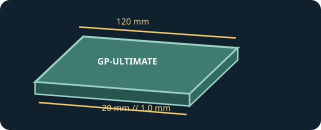

[ INDIVIDUAL COMPONENT // COOLING ]
GELID GP-Ultimate 120 × 20 × 1.0 mm
One 120 × 20 mm GP-Ultimate sheet, part TP-GP04-R-B, with a 1.0 mm thickness and manufacturer-rated 15 W/(m·K) conductivity.

IDENTIFICATION: This is the 120 × 20 mm, 1.0 mm version, not the similarly named GP-Extreme pad or another GP-Ultimate thickness.
Manufacturer specifications
| Catalog subcategory | Thermal Accessories |
|---|---|
| Exact model / code | GELID GP-Ultimate 120 × 20 × 1.0 mm; TP-GP04-R-B |
| Material | Thermal pad; GELID does not provide a complete material formulation in the linked product sheet. |
| Dimensions / thickness | 120 × 20 × 1.0 mm, as specified by GELID. |
| Thermal conductivity | 15 W/(m·K), manufacturer specification. |
| Electrical properties | Non-electrically conductive, non-corrosive, non-curing, and non-toxic per GELID. |
| Other maker ratings | Density 3.2 g/cm³; hardness 60–70 Shore OO; −60 °C to +220 °C operating range. |
Application & compatibility cautions
- Use only where a 1.0 mm thermal pad is specified; thickness mismatch can lift a cooler off adjacent silicon or leave the intended device without contact.
- Remove protective films as directed and do not fold or stack the sheet. Cut only as needed for the target contact area while keeping clear of connectors.
- For GPU/VRM or SSD servicing, preserve the OEM layout and use model-specific instructions; the conductivity rating is not a substitute for fit confirmation.
Manufacturer sources
- GELID Solutions — GP-Ultimate 120 × 20 thermal padManufacturer product information for this sheet family.
- GELID Solutions — GP-Ultimate 120 × 20 single-pack specificationManufacturer specification sheet for the exact package and thickness option.
This static catalog entry is an identification aid, not a compatibility guarantee; verify the exact device gap and cooling assembly.